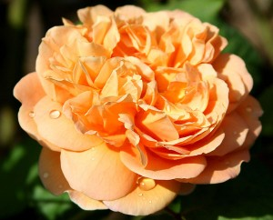
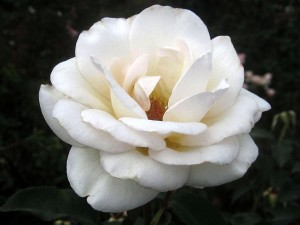
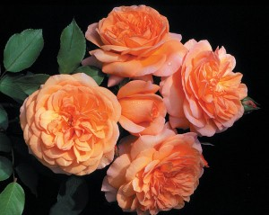

Heirloom Roses
We are proud of our special hybrid variations on classic beauties. We are particularly proud of the following roses. Download a brochure with more information about Our Full Line of Heritage Roses.
Apricot Beauty
We offer a great climbing rose that is an addition to our "Impressionist" line of fragrant climbing roses. This continual blooming climbing rose has all the charm and grace of an old garden rose.
Rich, deep apricot bronze buds unfurl into lovely, many petaled 4-5" blooms of a beautiful shade of apricot. May be grown as a large shrub or climber.
Moonlight
Light pink buds open to pale pink blooms with a light fragrance on a rounded plant with dark green leaves.
This plant is a continual blooming upright bush with reddish stems and bronze-green foliage which provides a background for the striking blooms and an added bonus of lovely fragrance.
Clementino
Rated by the American Rose Society ahead of 29 out of 32 David Austin English Roses for exhibition beauty. This rose has been greatly admired by both our staff and garden visitors, receiving rave reviews.
Bred from 'Grady Thorn'. The old-fashioned, fully double, English-style 4" blooms (petals 70) can best be described as an intense copper. It is a color quite unlike that found in any other rose. When John first saw the rare beauty and outstanding character of this rose he knew he would name it for his wife.
This plant is a continual blooming upright bush with reddish stems and bronze-green foliage which provides a background for the striking blooms and an added bonus of lovely fragrance.
Friendly and Knowledgeable Year-Round Office Staff
Every attempt is made by our staff to answer all calls in person. Occasionally you will get a pre-recorded message when they are assisting other customers. You will be given our toll free number (800-123-4567) to call again and we appreciate your patience and understanding. Our office staff will be happy to help you with an order and answer your questions about roses and their care. In the event we cannot answer your questions we may be able to direct you to another resource for your inquiries.
- Written Information Request Form (Word)
- Mailing Rate Table (Word)
All Our Roses are Virus-Free
Heirloom Roses has been a leader in bringing virus problems to the attention of the public and industry. Virus-free roses are healthier, more winter hardy, produce up to 20% more blooms and are more disease resistant.